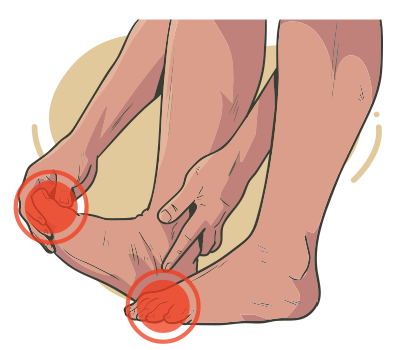

Dor articular é uma queixa frequente. Muitas vezes não é possível identificar uma doença específica, ou, mesmo identificada, pode haver contraindicação quanto ao uso de medicamentos, pois as opções terapêuticas apresentam toxicidade ou efeitos adversos que inviabilizam seu uso. São situações em que os fitoterápicos podem ser alternativa à terapêutica convencional.
Clique na imagem e veja um exemplo de doença causada pela artropatia.
